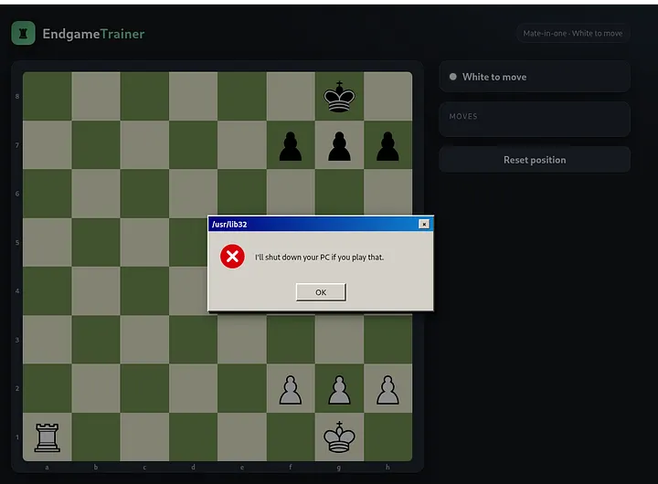

“I'll Shut Down Your PC If You Play That” — Fool's Mate Walkthrough
A harmless chess game threatened to shut down my PC if I made the winning move. Instead of listening, I examined the application’s backend interaction and explored an important lesson about trusting client-side controls.
Read the walkthrough ↗